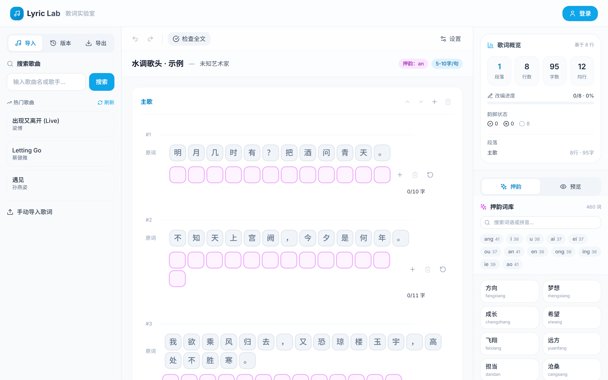
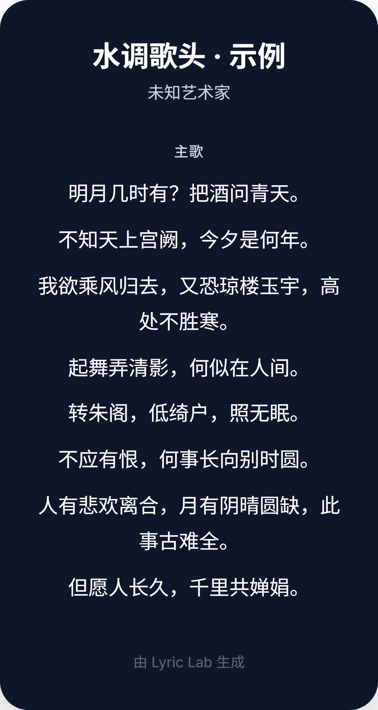
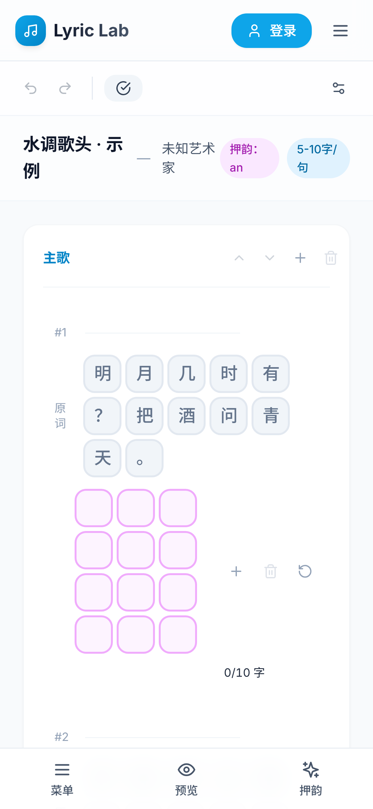

在线歌词改编工作台
Lyric Lab 歌词实验室
逐字改词，实时押韵。
把一首歌的词，改成你想唱的那一版。
原文与改编词一字一格并排。押韵规则一开，每行末字立刻标绿或标红；改完导出 TXT、LRC 或 HTML 歌词页。
MIT 许可 · React + Express + PostgreSQL · 不登录 也能写

- ang41
- i38
- u38
- ai37
- ei37
- ou37
- an41
- en36
- ong39
- ing36
- ie39
- ao41
RHYME
押韵怎么判
每行只看最后一个字：取拼音 → 折算韵基 → 比对声调。介音不参与押韵，复合韵母按十三辙归类，所以「圆」和「天」算同一个韵。
示例规则：指定韵母 an。切成「平声尾 / 仄声尾」时改比声调 —— 一声二声为平，三声四声为仄。
FEATURES
一台改词台该有的东西
从导入到导出，中间只隔着一个字格。
逐字编辑器
原文与改编词一字一格并排，改一个字就重排一行。段落可以新增、复制、上下移动，标题也能改。
四种押韵规则
无押韵、指定韵母、平声尾、仄声尾随时切换。命中标绿、不合标红，「检查全文」给出整篇匹配率。
460 词押韵词库
12 个韵类按十三辙归组，每类附拼音。可以搜中文也可以搜拼音，点一下词就插到当前行末。
字数区间
给每句设定字数上下限，超限立刻有提示。右侧概览实时给出段落数、行数、总字数和平均行长。
版本管理
本地保存带标签的版本，和当前稿并排对比，差异逐句高亮，一键恢复。登录之后还能同步到云端。
四种导出
TXT 文本、LRC（带时间戳）、LRC（纯歌词）、HTML 歌词页。文件名带歌名与导出时间。
曲库自动入库
node-cron 每天凌晨两点抓 QQ 音乐与网易云的热歌进库。想快点的话，直接粘贴歌词导入也一样快。
离线与账号
编辑、押韵、版本、导出都在浏览器本地完成，不登录也能写。注册后 access + refresh 双 Token 自动续期。
SCREENSHOTS
海报预览，与手机上的样子
以下截图取自线上部署的真实界面。


GET STARTED
本地跑起来
需要 Node.js 18+ 与 PostgreSQL 14+。仓库自带 docker-compose.yml，数据库一条命令就起来。
1 · 起数据库
docker compose up -d库名 lyric_lab，账号 postgres / 123456，端口 5432。
2 · 拉代码、装依赖
git clone https://github.com/uwakeme/lyric_lab.git
cd lyric_lab
cd frontend && npm install && cd ..
cd server && npm install && cd ..3 · 配置与迁移
cd server
cp .env.example .env
npx prisma migrate dev想先塞点示例数据，再跑一次 npx tsx src/db/seed.ts。
4 · 启动
# 终端 1：后端 :3001
cd server && npm run dev
# 终端 2：前端 :5173
cd frontend && npm run dev然后打开 http://localhost:5173